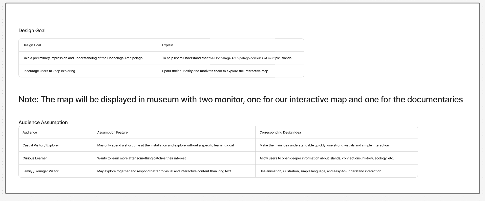
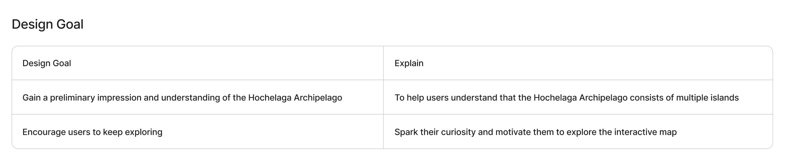
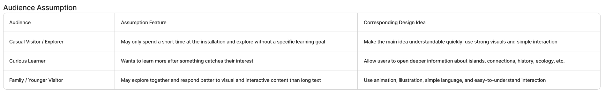
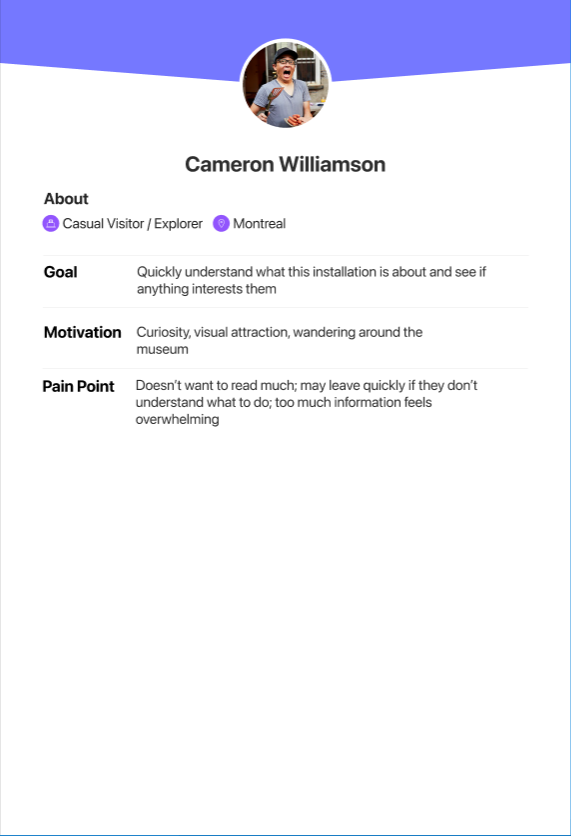
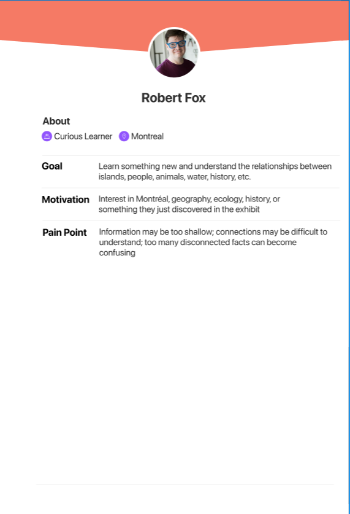
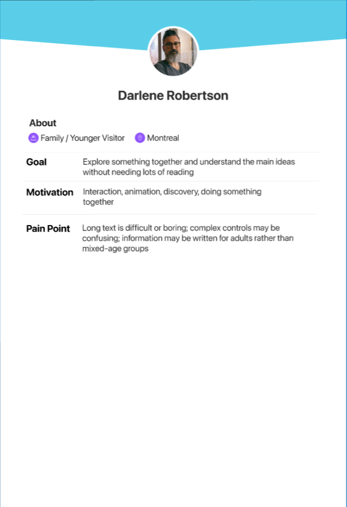
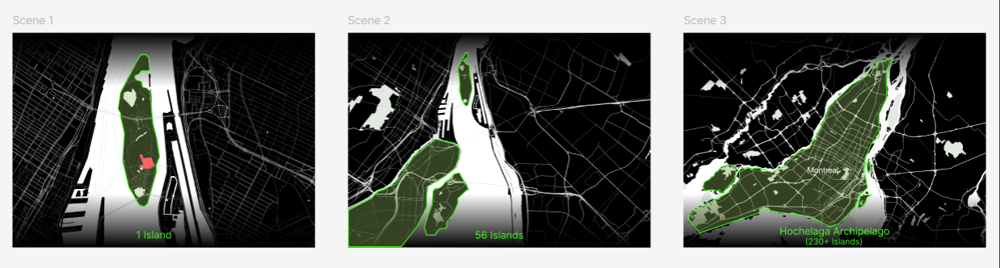
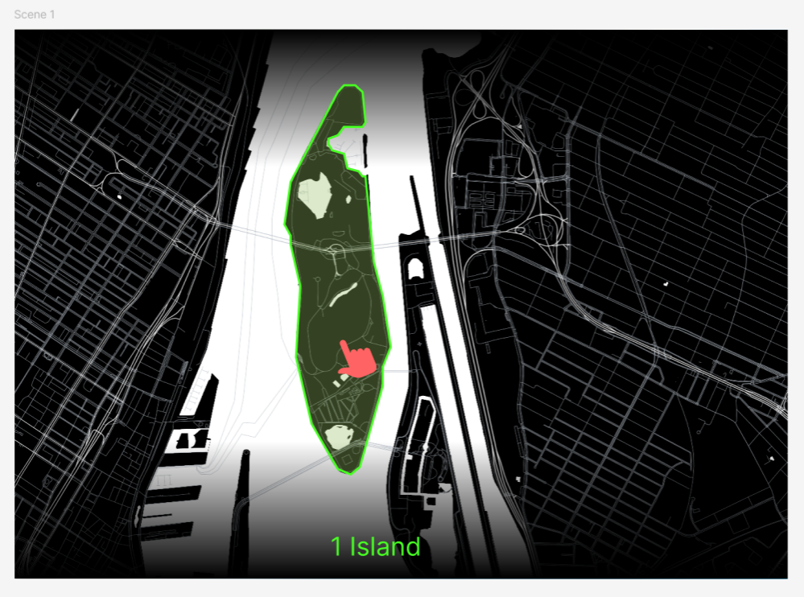
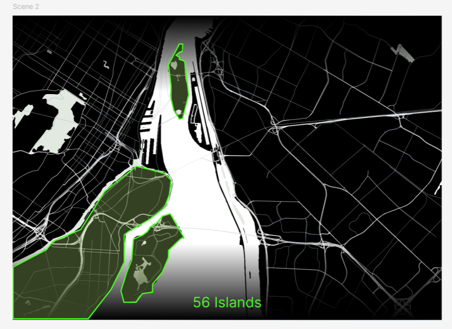
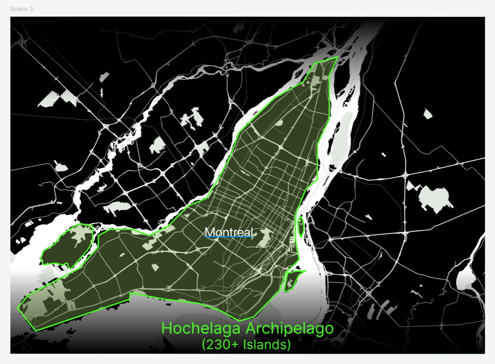

Design Journal
Week 3
Design Journal
Junming He
Hochelaga Archipelago
September 29, 2026
What I Worked On
This week, my main task was to organize and summarize the information we have so far, including the project goal and our target users. I also designed the first scene of the interactive map, meaning the first screen users will see when they enter the project, and made a prototype in Figma so that we can discuss the idea and its feasibility in next week's class.
Organizing Information
First, based on our conversation with Elizabeth last week, I got a clearer understanding that the interactive map will be displayed in a museum and that our main task is to introduce visitors to the Hochelaga Archipelago. At the most basic level, the project should at least make users interested in the Hochelaga Archipelago. A further goal would be to help them understand the less visible relationships between the different islands in the archipelago.
Based on this, I currently see our design goals as:
- Help users gain a preliminary understanding of the Hochelaga Archipelago
- Encourage users to continue exploring


User Assumption
Next, because the project will be shown in a museum, I started thinking more about what kinds of users we may have and how their different characteristics could affect the design. I divided the audience into three general types: Casual Visitor, Curious Learner, and Family / Younger Visitor. I also created personas for each group to imagine their goals, motivations, and pain points when visiting a museum.
I think this step can give us a clearer direction for the design later on. Instead of brainstorming a lot of ideas and then choosing one based only on what feels right, we can use the users’ needs to help guide our design decisions.




Prototype
Finally, based on the basic goal of at least making users interested in the Hochelaga Archipelago, I think the opening scene of the interactive map is very important. My idea is to attract the user’s attention while also giving them one simple piece of basic information: the Hochelaga Archipelago is made up of many islands, and Montreal is only one of them.
Because of this, I created a prototype in Figma. I mainly wanted to explore two things: first, how text could clearly communicate that the Hochelaga Archipelago is made up of many islands, and second, how a zoom-out effect could attract attention and gradually show the change in scale. In the prototype, I used the sequence 1 island → 56 islands → Hochelaga Archipelago (230+ islands) to make this idea easier to understand.
At this stage, the prototype is still just an early idea. Some questions still need to be discussed with the group, such as what visual style would be more engaging, whether the group thinks this opening scene is a good design direction, and whether the idea is technically feasible.



